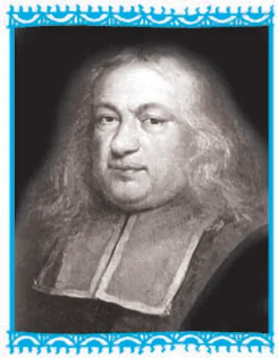

Does knowing one thing change the odds of another? Setting the stage for conditional probability

In earlier Classes, we have studied the probability as a measure of uncertainty of events in a random experiment. We discussed the axiomatic approach formulated by Russian Mathematician, A.N. Kolmogorov (1903–1987) and treated probability as a function of outcomes of the experiment.
We have also established equivalence between the axiomatic theory and the classical theory of probability in case of equally likely outcomes. On the basis of this relationship, we obtained probabilities of events associated with discrete sample spaces. We have also studied the addition rule of probability.
In this chapter, we shall discuss the important concept of conditional probability of an event given that another event has occurred, which will be helpful in understanding the Bayes’ theorem, multiplication rule of probability and independence of events.
We shall also learn an important concept of random variable and its probability distribution and also the mean and variance of a probability distribution. In the last section of the chapter, we shall study an important discrete probability distribution called Binomial distribution.
Throughout this chapter, we shall take up the experiments having equally likely outcomes, unless stated otherwise.